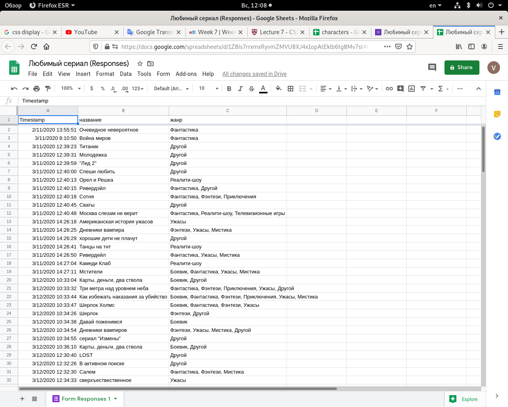

Заметки
Электронные таблицы
- Электронные таблицы - это программы для работы с данными представленными в виде таблиц. Файл для такой программы может содержать несколько таблиц(листов).
- Например, мы создали форму в Google Form для опроса студентов об их любимом тв шоу. Мы смотрим на их ответы и видим, что в электронной таблице есть три столбца: "Timestamp", "название", "жанр". 
- Мы можем загрузить CSV файл из google spreadsheet в нашу IDE, и увидеть, что это
текстовый файл с разделяемыми запятой значениями. Мы переименуем это файл в
favorites.csv. Вы можете закачать этот файл, выполнив wget https://vadimgb.github.io/data/favorites.csv - Создадим файл
favorites.py:
import csv
whith open("favorites.csv", "r") as file:
reader = csv.DictReader(file)
for row in reader:
print(row["название"])
- Мы просто открыли файл и распечатали название для каждой строки. DictReader создал список строк, каждая строка представлена словарём.
import csv
счет = {}
with open("favorites.csv", "r") with file:
reader = csv.DictReader(file)
for row in reader:
название = row["название"]
if название in reader:
row[название] += 1
else:
row[название] = 1
for название, число in счет.items():
print(название, число, sep = "|"
def f(пара):
return пара[1]
for название, число in sorted(счет.items(), key = f, reverse=True):
На сайте edx.org курс "cs50 introduction to computer science". Week 7. Видео лекция, конспект к ней. Наша 10 неделя - это их week7.